Contents
In Trump's Defense
This entry summarizes the strongest publicly cited points used to argue that the “Epstein files” do not establish criminal wrongdoing by current U.S. President Donald J. Trump. This does not mean Trump is innocent; it means that, in the public record summarized here, the cited materials are argued to be insufficient to convict without additional corroborated evidence.
Readers can weigh this framing in two ways: either Trump is innocent, or the currently released public record is insufficient to prove wrongdoing.
Points commonly cited as exculpatory
- No public victim accusation (as described in reporting): NBC News reported that Virginia Giuffre (a key Epstein survivor) never accused Trump of wrongdoing and wrote in a posthumously published memoir that Trump “couldn’t have been friendlier” when she met him at Mar-a-Lago.
- Claimed distancing / ban from Mar-a-Lago: Trump has said Epstein “stole” Giuffre from the Mar-a-Lago spa, and White House communications described Trump ejecting Epstein from the club, describing the reason as “for being a creep.” (The timing and underlying details are disputed in broader reporting; this bullet reflects those statements as cited by NBC.)
- Epstein emails cited by the White House as non-incriminating: NBC News reported on emails attributed to Epstein that reference Trump, including one stating that the “dog that hasn’t barked is trump” and that a victim “spent hours” with Trump but “he has never once been mentioned.” The White House said these emails “prove nothing” consistent with its view that Trump “did nothing wrong.”
- Mentions are not evidence: Supporters argue that name mentions, social overlap, and even travel logs are not by themselves proof of participation in Epstein’s crimes. The strongest exculpatory claim in this frame is the absence of a clear victim allegation or corroborated criminal conduct within the released materials.
DOJ statements and review summaries
- DOJ press release (Jan 30, 2026): The Department of Justice stated that the production includes public submissions and may include fake or falsely submitted materials, and that some documents contain “untrue and sensationalist claims” against President Trump submitted shortly before the 2020 election. DOJ added: “To be clear, the claims are unfounded and false …”
- DOJ/FBI memo (review findings): A DOJ-hosted memo summarizing review conclusions is frequently cited as stating that the review did not identify a “client list,” credible evidence of blackmail of prominent individuals, or a basis for investigating uncharged third parties. Readers should consult the memo directly.
Limits and open questions
This entry is not an “exoneration” finding, and it does not resolve questions about what Trump may have known (or when). It summarizes what is cited as the most favorable reading of the currently referenced releases in mainstream coverage.
- DOJ (Jan 30, 2026): “Department of Justice Publishes 3.5 Million Responsive Pages…” (includes statement on unfounded claims)
- DOJ: DOJ/FBI memo (review findings) — primary document link
- DOJ: Letter to Congress referenced in the Jan 30, 2026 press release
- NBC News: Coverage of Epstein emails referencing Trump (includes excerpts and White House response)
- NBC News: Trump statements about Giuffre and Mar-a-Lago; White House characterization of Epstein ban
- DocumentCloud: House Oversight release of an Epstein email (as referenced in NBC coverage)
- Snopes: Context on DOJ-released prosecutor email about Trump’s appearances in Epstein flight records
- DOJ: EFTA00016732 (referenced by Snopes)
- DOJ: EFTA00028716 (referenced by Snopes)
- DOJ: Epstein files portal
Trump on trial: The full landscape of sexual-misconduct allegations against Donald Trump

e-jean-carroll-trump.pngThis section consolidates publicly reported allegations of sexual misconduct made against Donald J. Trump over several decades. The list below is drawn primarily from mainstream reporting and court records. Inclusion here does not assert guilt in any individual case. Where applicable, outcomes (lawsuits, settlements, verdicts, withdrawals, or denials) are noted.
The purpose of presenting the full scope is contextual: the volume, time span, and recurring themes (“unwanted touching,” “forced kissing,” pageant-related boundary violations, and later defamation findings) are frequently cited as relevant to public trust—especially in light of Epstein-adjacent concerns discussed elsewhere on this page.
- Jessica Leeds (early 1980s): Alleged groping during a flight. Publicized in 2016; no lawsuit. Trump denied the claim.
- Ivana Trump (1989): Alleged sexual assault described in a divorce deposition; later clarified she did not intend a criminal meaning, while standing by the description in her memoir. Divorce settled; no charges. Trump denied wrongdoing.
- Jill Harth (1992): Alleged unwanted sexual advances at Mar-a-Lago. Filed a 1997 lawsuit; business claims settled, harassment claim withdrawn. Trump denied allegations.
- Stacey Williams (1993): Alleged groping in Trump Tower with Jeffrey Epstein present. Publicized in 2024; no lawsuit. Trump denied it.
- Beatrice Keul (1993): Alleged groping at the Plaza Hotel. Publicized in 2024; no lawsuit. Trump denied it.
- “Katie Johnson” / Jane Doe (1994): Anonymous allegation of rape at age 13 at an Epstein-associated residence. Lawsuits filed and withdrawn in 2016 amid reported threats; claims linked to controversial promoters. Trump denied it.
- E. Jean Carroll (1995–1996): Alleged rape in a Bergdorf Goodman dressing room. In 2023, a jury found Trump liable for sexual abuse and defamation; additional defamation damages awarded in 2024. Trump denied the allegation; appeals were denied.
- Lisa Boyne (1996): Alleged Trump encouraged models to walk on tables so he could look up their skirts. No lawsuit.
- Temple Taggart McDowell (1997): Alleged unwanted kissing during Miss USA pageant events. No lawsuit.
- Amy Dorris (1997): Alleged groping and forced kissing at the U.S. Open. No lawsuit.
- Cathy Heller (1997): Alleged unwanted kiss at Mar-a-Lago. No lawsuit.
- Karen Johnson (1997): Alleged groping at a Mar-a-Lago party. No lawsuit.
- Karena Virginia (1998): Alleged breast grab after the U.S. Open. No lawsuit.
- Kristin Anderson (early 1990s): Alleged groping at a nightclub. No lawsuit.
- Pageant dressing-room allegations (1997–2006): Multiple Miss Teen USA and Miss USA contestants alleged Trump entered dressing rooms while they were undressed. Trump acknowledged similar behavior in a 2005 radio interview, later disputing details.
- Mindy McGillivray (2003): Alleged buttocks grab at Mar-a-Lago. No lawsuit.
- Rachel Crooks (2005): Alleged unwanted kissing in Trump Tower elevator. No lawsuit.
- Natasha Stoynoff (2005): Alleged forced kiss during an interview at Mar-a-Lago; witnesses corroborated proximity. No lawsuit.
- Juliet Huddy (2005–2006): Alleged unwanted kiss in an elevator. No lawsuit.
- Jessica Drake (2006): Alleged unwanted kissing and advances at a golf event. No lawsuit.
- Ninni Laaksonen (2006): Alleged groping before a television appearance. No lawsuit.
- Summer Zervos (2007): Alleged unwanted advances; filed a defamation suit in 2017 after Trump denied claims; suit withdrawn in 2021.
- Cassandra Searles (2013): Alleged fondling at Miss USA pageant events. No lawsuit.
- Alva Johnson (2016): Alleged forced kiss at a campaign rally; lawsuit filed and later dismissed.
- Unnamed Mar-a-Lago employee (2019): Alleged assault; no lawsuit.
- Access Hollywood tape (2005, released 2016): Trump recorded bragging about non-consensual touching. He later called it “locker room talk.”
- Stormy Daniels (2006): Alleged affair; hush-money payment led to Trump’s 2024 felony conviction for falsifying business records.
- Karen McDougal (2006): Alleged affair; payment arranged via tabloid publisher. Trump denied relationship.
Criminal conviction: New York hush-money case (34 felony counts)
On May 30, 2024, Donald Trump was convicted by a Manhattan jury of 34 felony counts of falsifying business records in the first degree under New York Penal Law § 175.10 (People v. Donald J. Trump).
The charges stemmed from a scheme to conceal a $130,000 payment made to adult-film actress Stormy Daniels shortly before the 2016 presidential election. Prosecutors demonstrated that Trump, through his then-attorney Michael Cohen, reimbursed the payment using a series of checks and internal accounting entries falsely labeled as “legal expenses.” The state argued—and the jury agreed—that these falsifications were intended to conceal an unlawful effort to influence the election.
On January 10, 2025—shortly before Trump’s second inauguration—Judge Merchan imposed an unconditional discharge, leaving the felony convictions intact on Trump’s criminal record but imposing no incarceration, fines, probation, or supervision.
As of early 2026, the convictions remain in force and Trump has pursued multiple appeals and procedural challenges. No appellate court has reversed or nullified the convictions to date.
- Associated Press: Jury convicts Trump on 34 felony counts
- New York Times: Verdict coverage and legal analysis
- Washington Post: Sentencing and unconditional discharge explanation
- DOJ / SDNY: Business records conviction summary
E. Jean Carroll: civil jury findings (sexual abuse + defamation)
A jury found Trump liable in E. Jean Carroll’s civil case (sexual abuse and defamation). This is frequently referenced alongside the wider set of public allegations. Trump denies wrongdoing, and supporters argue the allegations are politicized; others argue the volume and court outcomes matter for public trust.
- Overview list of allegations (for indexing, not proof)
- AP News: jury verdict coverage
- CBS News: additional accuser accounts
- Wikipedia: Consolidated allegation index (used here as a navigation hub to primary reporting)
- Associated Press: E. Jean Carroll verdict coverage
- Washington Post: Defamation damages ruling
- DOJ / SDNY: Business records conviction summary
This section is intentionally exhaustive rather than selective. Supporters may dispute interpretations or credibility; others argue that repetition, corroboration patterns, and court outcomes are themselves relevant facts.
Roy Cohn, disbarment, and long-standing blackmail allegations

trump-cohn.png
trump-cohn2.png
trump-cohn3.pngTrump was mentored by NYC attorney Roy Cohn. Here are Cohn’s three rules, as they are often summarized:
- Attack, attack, attack: Never defend. Go on offense immediately. Momentum matters more than facts in public conflict.
- Admit nothing. Deny everything: Never concede error or guilt—ever. Even partial admissions are seen as weakness and will be exploited.
- Claim victory and never admit defeat: No matter the outcome, declare you won. Control the narrative; perception becomes reality.
Cohn is a historically documented New York “fixer” figure with mob-adjacent clients, multiple criminal indictments, and eventual disbarment for unethical conduct. Separately, Cohn’s private life has been the subject of decades of allegations involving coercion, sexual compromise, and blackmail.
Cohn rose to national prominence as chief counsel to Senator Joseph McCarthy during the Red Scare, later becoming a powerful New York lawyer representing organized-crime figures and political elites. He was disbarred in 1986 for professional misconduct, including dishonesty, conflicts of interest, and misappropriation of client funds.
Documented misconduct and historical record
- Disbarment and indictments: Cohn was indicted multiple times in his career (including for bribery and extortion), though often acquitted. He was ultimately disbarred by the New York Appellate Division for unethical conduct.
- Mob and fixer role: Mainstream biographies and court reporting describe Cohn as a lawyer who used intimidation, leverage, and back-channel influence to protect powerful clients.
- Lavender Scare contradiction: While helping lead government purges of suspected homosexuals, Cohn privately denied being gay until his death from AIDS-related complications in 1986.
Allegations of sexual blackmail (contested and unproven)
Beyond proven financial and ethical misconduct, Cohn has long been accused—without criminal convictions—of participating in sexual blackmail operations targeting powerful figures. These claims appear in investigative books, sworn testimony, and interviews, but rely largely on witness accounts rather than physical evidence.
Central to these allegations are descriptions of gatherings at New York’s Plaza Hotel (including a suite sometimes referred to as the “blue suite”), where compromising situations were allegedly orchestrated to gain leverage over politicians and officials. Some accounts specifically allege the presence of young men or minors; these claims remain disputed and were never adjudicated in court.
One frequently cited witness is Susan Rosenstiel, ex-wife of liquor magnate Lewis Rosenstiel, who testified in divorce proceedings and later interviews that she observed parties involving J. Edgar Hoover, Roy Cohn, and young males. Her testimony was given under oath and deemed credible by a New York judge, but no corroborating physical evidence (such as photographs or recordings) has ever surfaced publicly.
Additional claims come from journalists, biographers, and former law-enforcement figures who describe Cohn as using “compromise” as a tool of power. While these narratives form a consistent pattern across decades of reporting, historians generally caution that the most extreme allegations remain circumstantial.
Why this matters in Trump’s context
Trump has said Cohn taught him to “hit back harder,” never apologize, and treat ethics as negotiable. Even setting aside the unproven sexual-blackmail claims, Cohn’s documented career is a case study in intimidation, leverage, and impunity—methods observers see echoed in Trump’s later approach to business, media, and politics.
The broader point of including Cohn here is contextual: Trump’s formative environment included a New York ecosystem where rule-bending fixers were normalized. Supporters respond that Cohn’s conduct is his own and should not be treated as proof about Trump. Interpretive context: Some critics argue that allegations about Cohn using “compromise” as leverage—and later public theories about Epstein-style blackmail—make Trump’s early mentorship feel relevant as a possible window into what kinds of influence tactics were normalized around him. This is not proof; it is a pattern argument.
People who emphasize the “fixer” pattern also point to later figures such as Michael Cohen and the tabloid-era damage-control ecosystem as evidence of a long-running culture of spin, suppression, and hardball reputation management.
- Roy Cohn — Disbarment and indictments (overview)
- The Guardian: Catch-and-kill coverage touching the tabloid-era damage-control ecosystem
- Roy Cohn — Sexual blackmail allegations (overview)
- Nicholas von Hoffman, Citizen Cohn (1988) — standard biography based on interviews with associates
- Anthony Summers, Official and Confidential: The Secret Life of J. Edgar Hoover (1993)
-
Whitney Webb, One Nation Under Blackmail, Vol. 1 (2022)
(Extensively footnoted; some conclusions debated among historians) - ConspiracyArchive: interview-based claim (unverified)
- New York Times archive: coverage of Roy Cohn indictments and legal proceedings (1960s–1970s)
- Where’s My Roy Cohn? (2019 documentary) — interviews with former associates and journalists
Trump Family History: Frederick Trump’s Gold Rush-era businesses in red-light districts

trump-grandfather.pngReporting and biographical accounts describe Donald Trump’s grandfather Frederick (Friedrich) Trump operating restaurants and hotel-style businesses in Gold Rush-era red-light districts, where prostitution was common and sometimes facilitated through euphemistic advertising and “private” accommodations. The strongest, most widely cited claim is not that Frederick personally managed sex workers, but that his venues were structured to profit from a vice-heavy economy (liquor sales, lodging, and sexual services available on-site or adjacent).
Timeline (as described in secondary sources)
- Seattle-era ventures (1890s): Accounts commonly cited in later reporting place Frederick Trump’s early restaurant activity in Seattle’s Pioneer Square, a district described as vice-heavy at the time.
- Klondike boomtown operations (1898–1901): Biographical accounts describe Frederick Trump and a partner building the New Arctic Restaurant and Hotel in Bennett, then continuing operations in Whitehorse—settings where liquor and sex work are described as major revenue drivers in boomtown economies.
- Exit and reinvestment: Summaries describe a crackdown on vice activity and Frederick Trump selling out/returning south; later accounts describe him investing earnings into real estate, cited as an early foundation for family wealth.
What the record is commonly cited to show
- Seattle-era red-light district context (as described in secondary sources): Some accounts place Frederick Trump’s early Seattle restaurant/hotel activity in Pioneer Square, a district described as vice-heavy in that era. The significance, as framed by critics, is that these businesses operated where prostitution and other vice economy activity were common and monetized.
- Advertising euphemisms (as described): Coverage and secondary summaries cite period ad language such as “rooms for ladies,” widely treated as a euphemism for prostitution accommodations.
- Klondike-era operations (as described): Biographical accounts and later reporting describe the New Arctic Restaurant and Hotel (Bennett, then later Whitehorse) as a profitable boomtown business. Gwenda Blair’s account is frequently cited for the claim that liquor sales and sex work were central to the cash flow, and that ads described “private” accommodations (sometimes summarized as “private boxes”) consistent with paid sexual services.
- Concrete examples often quoted from secondary sources: Commonly cited summaries include (a) the Seattle “Dairy Restaurant” / Pioneer Square red-light district context, and (b) Bennett-era ad descriptions for the New Arctic that mention “private” spaces for “ladies and parties,” sometimes summarized as rooms or boxes where gold dust was weighed. These details are typically presented via later biographies and articles quoting or paraphrasing period ads and local records.
- How the “private boxes” detail is usually framed: In the retellings most often cited by critics, “private boxes” are described as spaces equipped with beds and a scale for weighing gold dust as payment. This description is typically presented via later biographies and articles summarizing period advertising, rather than as a single canonical primary document on this page.
- Vice crackdowns (as described): Some summaries describe a Canadian crackdown on vice activity in the early 1900s as part of the context for when these operations ended, after which Frederick Trump returned south and later invested in New York real estate.
- What is debated: Some summaries (including Snopes) argue that the strongest evidence supports “vice-district profiteering” rather than a definitive claim that Frederick Trump personally ran a brothel in the narrow sense. Others argue that, in that time and place, the distinction can be more semantic than meaningful.
What this card is (and is not) asserting: This section is about the historical claim that Frederick Trump’s early businesses were positioned to profit from a prostitution-adjacent economy. It is not claiming a direct, proven inheritance of a specific “operation” from grandfather to grandson; it is presenting the evidentiary basis for why critics consider the family-history angle relevant to broader “pattern” arguments.
Why some readers see this as relevant
Interpretive context: Readers who emphasize “pattern” arguments cite this history as an example of the family’s early wealth formation occurring in environments where vice, money, and power overlapped. Even if the historical record does not prove a direct through-line to Donald Trump, it can make later allegations about sexual commerce, transactional influence, or kompromat-style leverage feel—at minimum—within the realm of possibility to some observers.
- Bloomberg (Oct 26, 2016)
- Snopes (Dec 2, 2015): analysis of Frederick Trump / prostitution claims and what is (and is not) supported
- Gwenda Blair, The Trumps: Three Generations That Built an Empire (2000)
- David Cay Johnston, The Making of Donald Trump (2016)
Robert Morris, Trump’s evangelical adviser, indicted on child abuse charges

robert-morris-trump.png
robert-morris-arrested.pngRobert Morris—an influential megachurch pastor who served as a faith advisor to Donald Trump during his first term and was part of Trump’s evangelical advisory ecosystem—was indicted in 2025 on multiple felony counts related to alleged child sexual abuse.
Morris is the founding pastor of a Texas-based megachurch and was widely regarded as a prominent figure in evangelical political circles. He was publicly associated with Trump through advisory roles and religious outreach efforts during Trump’s presidency.
Indictment details (pending case)
- Year indicted: 2025
- Charges: Five felony counts of lewd or indecent acts with a child under the age of 16
- Alleged victim: A 12-year-old girl
- Timeframe of alleged abuse: 1980s
- Potential penalty: Up to 20 years in prison per count if convicted
These charges remain allegations until proven in court. Morris has denied wrongdoing, and no conviction has yet occurred. Trump has not been accused of involvement in the alleged abuse.
Why critics consider this relevant
This is included because it is frequently cited in arguments about judgment, vetting, and the moral authority claimed by Trump’s evangelical support base: a spiritual adviser associated with Trump now faces serious child-abuse charges.
Supporters respond that Morris’s alleged conduct predates his advisory role and that Trump cannot be held responsible for the private actions of religious figures. This section is included to document why observers view the association as troubling in light of broader patterns discussed elsewhere on this page.
Andrew and Tristan Tate, serious charges, and Trump-family adjacency

tate-brothers.png
tate-brothers2.png
tate-brothers3.pngAndrew Tate and his brother Tristan Tate—online influencers charged in Romania with rape, human trafficking, and forming an organized criminal group—have formed public-facing associations with members of the Trump family in recent years.
Romanian prosecutors allege that the Tate brothers recruited women through deception, coerced them into producing online sexual content, and exercised control through intimidation and exploitation. Both brothers deny the charges, and the cases remain ongoing within the Romanian legal system.
Nature of the association
- Reporting has described the Tate brothers’ association with the Trump-family orbit as largely social / media-adjacent, but extending back at least to 2017 via Donald Trump Jr.
- Andrew Tate has publicly praised Donald Trump and aligned himself rhetorically with Trump-style politics.
- Social-media posts and reporting have linked the Tate brothers to Donald Trump Jr. and to pro-Trump influencer ecosystems.
- Multiple outlets have reported that after Trump’s 2024 victory, U.S. officials raised the Tate brothers’ Romania travel restrictions with Romanian officials; Romanian officials have denied improper pressure, while confirming conversations occurred.
There is no allegation that Donald Trump, Donald Trump Jr., or other family members participated in or had knowledge of the alleged crimes involving the Tate brothers. The concern raised by critics is one of vetting and judgment: individuals facing serious trafficking and rape charges being welcomed or amplified within the same political-cultural ecosystem.
Reported instances of alliance, amplification, or intervention (selected examples)
- Donald Trump Jr. support (reported): The Guardian and PBS reporting described Trump Jr. as having a long-running relationship with Andrew Tate (described as friendship going back to 2016/2017 in that reporting) and as publicly criticizing the brothers’ detention in Romania.
- Barron Trump contact (reported): In a PBS NewsHour segment discussing a New York Times investigation, reporter Megan Twohey said the reporting found Barron Trump was a fan of Andrew Tate and that they spoke by Zoom in 2024 via a mutual friend. This is included as reported and is not independently verified on this page beyond that coverage.
- Grenell raising the travel-ban issue: The Guardian reported that Romania’s foreign minister confirmed Trump’s envoy Richard Grenell spoke with him about the Tate brothers’ travel ban at the Munich Security Conference (Romanian officials stated there was no threat/pressure).
- Paul Ingrassia role (reported): The Guardian reported that Paul Ingrassia, described as one of the Tate brothers’ lawyers, was sworn in as the White House liaison for the Department of Justice, and wrote publicly in their defense.
- Alina Habba public praise: The Guardian quoted Habba telling Tate in a rightwing podcast appearance that she was a “big fan,” and framing Tate’s legal troubles as similar to what she claimed Trump experienced.
- Pro-Tate media circuit overlap: The Guardian described Trump appearing on a 2024 stream with Adin Ross (described as a Tate collaborator), and JD Vance appearing on the Nelk Boys podcast (described as pro-Tate).
Social-media reference links (not independently verified here)
- X.com: clip compilation circulating statements about coercion/pimping (social media link)
- X.com: clip circulating statements about “lover boy”/pimping framing (social media link)
Why critics consider this relevant
The concern raised here is reputational and political: figures facing serious trafficking and rape charges presenting themselves as allies, and receiving engagement or validation from Trump-family figures. Supporters respond that public figures cannot control who expresses admiration for them; others argue that reciprocal engagement can legitimize harmful actors.
In the context of the wider pattern documented on this page—where individuals later charged or convicted of sexual crimes appear repeatedly near Trump-adjacent spaces—this association reinforces skepticism among observers, even when no direct wrongdoing is alleged.
- PBS NewsHour: Andrew and Tristan Tate charged with rape and human trafficking in Romania
- PBS NewsHour: Romanian prosecutors send Tate brothers to trial
- PBS NewsHour: segment discussing a New York Times investigation into Tate brothers’ ties to Trump-family orbit
- The Guardian: Explainer on Tate brothers’ charges and case status
- The Guardian (Feb 21, 2025): reporting/analysis describing pro-Trump alliances, Grenell, Ingrassia, Habba, and pro-Tate media overlap
- The Guardian (Feb 27, 2025): Tate brothers fly to US after travel ban lifted; Grenell conversation confirmed by Romanian foreign minister
- USA Today (Feb 18, 2025): reporting that U.S. officials raised Tate travel restrictions with Romania (citing Financial Times)
Trump’s closeness with Kid Rock (and those lyrics)

trump-kid-rock.png
trump-kid-rock2.png
kid-rock-lyrics.pngTrump counts rock musician Kid Rock among his friends and has praised him publicly. This association drew criticism when lyrics resurfaced from a 2001 Kid Rock song boasting “I like ’em underage, see… Some say that’s statutory, but I say it’s mandatory.” Trump’s warm endorsement of Kid Rock—despite those lyrics—adds to the broader discomfort some people already feel about the environments Trump chooses to normalize. Interpretive context: Some readers see this as part of a broader pattern: Trump continuing to embrace public figures even when their public record includes underage-themed lyrics, allegations, or other youth/sexual-boundary controversies. Others see it as celebrity proximity rather than meaningful evidence.
Ted Nugent: underage-relationship controversy and Trump adjacency
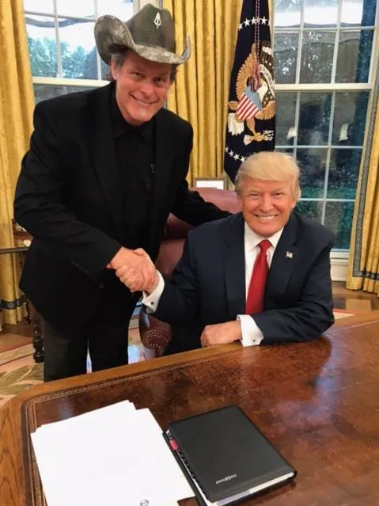
ted_nugent2.png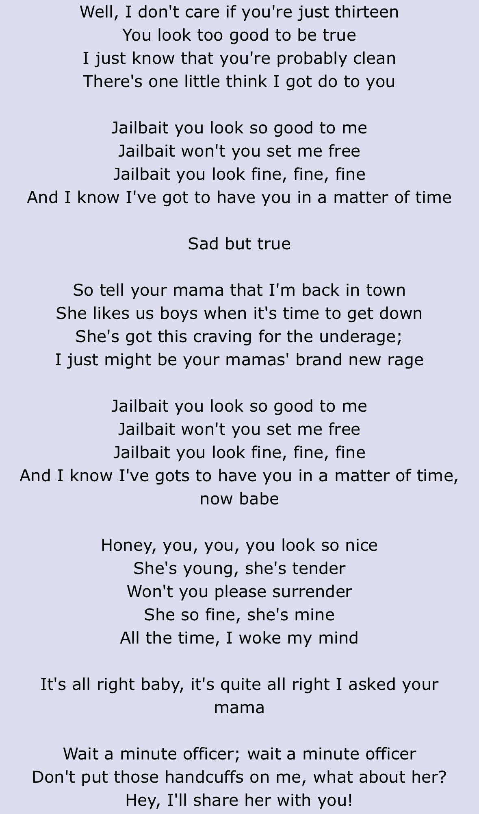
ted_nugent3.pngTed Nugent has been a highly visible Trump supporter and was invited to the White House during Trump’s first term. Critics argue that Nugent’s long-running public controversies involving underage-themed content and reported relationships raise a vetting and judgment concern when he is treated as a political ally.
Underage-relationship controversy (reported / discussed in media)
- VH1 “Behind the Music” / Pele Massa claim (as summarized): A Snopes review describes the VH1 episode as stating that Nugent began a relationship with 17-year-old Pele Massa when he was 30, and that (per the VH1 narrator) her mother signed papers making Nugent her legal guardian. Snopes notes it could not independently verify the guardianship paperwork claim.
- Public statements about underage partners (as quoted in reporting): In the same VH1 context, Nugent is quoted describing having “the stamp of approval of their parents,” which critics interpret as an attempt to normalize relationships with teenagers.
- “Jailbait” (cultural evidence frequently cited): Nugent’s song “Jailbait” is widely criticized for lyrics framed around attraction to underage girls. This is often cited as part of the public persona critics say overlaps with the above relationship claims.
Courtney Love allegation (unadjudicated)
In a 2004 appearance on The Howard Stern Show (as recapped by Blabbermouth), Courtney Love alleged she performed oral sex on Nugent when she was 12 years old. This allegation has not been adjudicated in court and no charges are presented here as having resulted from it.
Trump relationship / political support (documented)
- White House dinner (2017): The Detroit Free Press reported that Nugent, Kid Rock, and others attended a private dinner and White House tour with President Trump; Nugent also described giving Trump an autographed guitar.
- Pro-Trump rhetoric (as quoted): MLive quoted Nugent describing Trump as “the right man at the right time” and “a savior from the depth of corrupt cruelty perpetrated by our government.”
Interpretive context: Supporters treat Nugent as a provocative entertainer whose personal controversies are separate from politics. Critics treat the association as one more example of Trump aligning with public figures whose record includes underage-themed controversy.
- Snopes (Apr 20, 2021): review of underage-relationship / guardianship claim and evidentiary limits
- Loudwire: summary of VH1 “Behind the Music” claim + Nugent denial (Rogan clip context)
- Blabbermouth: recap of Courtney Love’s Howard Stern allegation (2004)
- Detroit Free Press (Apr 20, 2017): Nugent on White House dinner/tour and giving Trump an autographed guitar
- MLive (May 2025): Nugent quote praising Trump (“right man… savior…”)
- Genius: “Jailbait” lyrics (reference)
Trump’s comments about Ivanka

trump-ivanka.png
trump-ivanka2.png
trump-ivanka3.pngTrump has repeatedly made remarks about his daughter Ivanka that many people interpret as sexualizing or objectifying. Even when framed as jokes, the pattern is a frequent source of discomfort—especially in a broader context where youth/sexual boundaries are already central to Epstein-related public scrutiny.
Sultan Ahmed bin Sulayem: Trump’s Dubai licensing deal and Epstein-file correspondence references
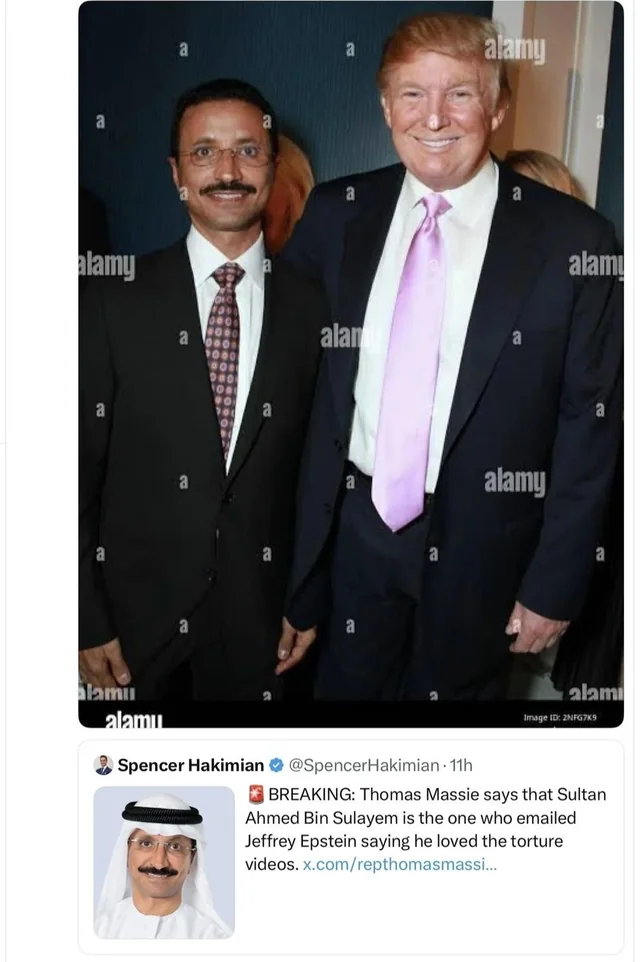
pictures_for_website_png/sultan_ahmed_bin_sulayem.png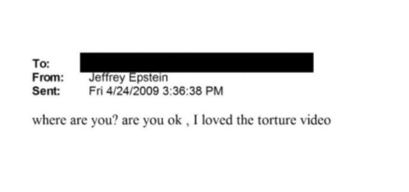
pictures_for_website_png/sultan2.png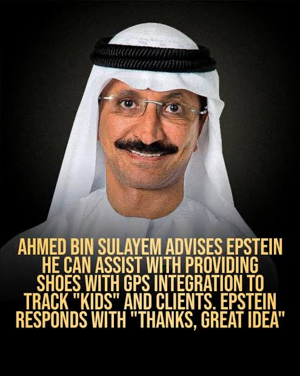
pictures_for_website_png/sultan3.pngSultan Ahmed bin Sulayem is an Emirati business executive who chaired Dubai developer Nakheel during the mid-2000s and later became a prominent logistics executive as DP World’s chairman and CEO. He appears in this dossier due to a documented Trump-branded real-estate licensing deal in Dubai and later reporting that names him in connection with released Epstein-related email correspondence.
Trump / Nakheel real-estate deal (documented)
In 2005, Nakheel announced Trump-branded projects on Palm Jumeirah, with reporting describing the arrangement as a licensing/branding deal where Trump’s organization was not required to invest money. The plans were later shelved amid the broader Dubai property downturn.
Epstein-file mentions (association context)
In 2026 reporting about newly released or newly unredacted Epstein-related material, Rep. Thomas Massie publicly identified bin Sulayem as the recipient of a Jeffrey Epstein email referencing a “torture video,” and news reports linked to DOJ-hosted PDFs for related correspondence. Important context: This entry documents reported communications/associations; it does not allege bin Sulayem participated in Epstein’s crimes.
- Al Jazeera (Oct 7, 2005): Nakheel/Trump Dubai project announcement; quotes bin Sulayem on licensing structure
- NBC News (Oct 2005): Trump/Nakheel “tulip-shaped” Palm Jumeirah project reporting
- Herald-Tribune (Oct 2005): coverage of the Trump/Nakheel Dubai project and deal terms
- The New Republic (Feb 2026): reporting on Massie’s identification and the “torture video” email
- DOJ Epstein disclosures (PDF, age-gated): email cited in 2026 reporting
- DOJ Epstein disclosures (PDF, age-gated): related document cited in 2026 reporting
Vince McMahon, WWE showmanship, political alliance—and McMahon’s own misconduct allegations

vince-mcmahon-donald.png
vince-mcmahon.pngDonald Trump has had a long personal and professional relationship with WWE executive Vince McMahon that blends entertainment branding with political messaging. Trump’s Atlantic City properties were promoted in connection with major WWE events in the late 1980s, and Trump later participated directly in WWE storylines—including the widely covered 2007 “Battle of the Billionaires” angle with McMahon. Commentators have argued that professional-wrestling style spectacle (villains, heroes, crowd work, kayfabe-adjacent messaging) overlaps with the political persona Trump later developed.
Reporting has also described the relationship as not just cultural but financial and political. Reporting has described donations connected to the McMahon family to Trump-aligned efforts in the past, and Trump appointed Linda McMahon (Vince McMahon’s spouse and a longtime Trump ally) to senior government roles. Linda McMahon served as Administrator of the Small Business Administration in Trump’s first term and was later nominated and confirmed as Secretary of Education in Trump’s second term.
Vince McMahon himself has faced a long-running series of misconduct allegations and legal disputes connected to WWE, including (a) reports of undisclosed settlement payments and internal investigations, and (b) civil lawsuits alleging serious sexual misconduct and coercion. These matters remain contested in court and in public reporting; they are not criminal convictions. Many readers include this as part of a broader “pattern” concern about proximity to figures repeatedly accused of sexual misconduct.
- Washington Post (Jul 2025) — WrestleMania IV context at/marketed with Trump Plaza era: coverage referencing the 1988 Atlantic City WrestleMania connection
- Wikipedia (background indexing for WWE appearances / storylines; verify details via primary reporting when possible): Battle of the Billionaires (WrestleMania 23) and Trump—WWE/Hall of Fame references
- U.S. Department of Education press release (Mar 3, 2025) — Linda McMahon confirmed as Secretary of Education: ED.gov announcement
- Congress.gov — confirmation record (vote and nomination details): PN11-10 (Secretary of Education nomination)
- Associated Press (Mar 3, 2025) — mainstream coverage of Linda McMahon’s confirmation and Trump’s stated goals for ED: AP: Senate confirms McMahon to lead Education Department
-
If you want an image that won’t crowd text: keep it in this
<figure>block only, and use a wide image (landscape) so it scales cleanly.
Howard Lutnick: Trump-appointed Commerce Secretary and transition fundraiser
pictures_for_website_png/court_seal.pngHoward Lutnick is a longtime Trump ally who served as a co-chair of Trump’s 2024 transition operation and was nominated by Trump to lead the Department of Commerce. Trump announced the pick on November 19, 2024; the Senate confirmed Lutnick on February 18, 2025; and he was sworn in on February 21, 2025.
Why this is Trump-relevant
- Transition leadership: Trump selected Lutnick (alongside Linda McMahon) to lead transition planning.
- Cabinet appointment: Trump nominated Lutnick as Commerce Secretary, placing him at the center of Trump’s trade and tariff agenda.
- Business and compliance controversies (Cantor affiliate): A Cantor Gaming entity was fined and entered settlements over anti-money-laundering failures and illegal gambling-related conduct, a record critics cite when questioning judgment and oversight.
- TerraMar overlap via family philanthropy (Maxwell nonprofit): Some online discussions cite archived TerraMar pages as listing Lutnick’s sister Edie/Edith Lutnick as a “founding citizen” of the TerraMar Project, an ocean nonprofit founded by Ghislaine Maxwell. This is presented here as a philanthropic / elite-network overlap; it is not presented as evidence of criminal wrongdoing.
- Partnership for Public Service (Aug 2024): statement noting Trump naming Lutnick and Linda McMahon as transition co-chairs
- Ballotpedia News (Feb 19, 2025): nomination announcement + Senate confirmation vote
- Miller Center: nomination context and sworn-in date
- FinCEN (Oct 3, 2016): Cantor Gaming AML penalties and settlement summary
- Wayback Machine (Mar 4, 2016): archived TerraMar homepage (context for TerraMar site claims)
- Business Insider (Jul 2019): reporting that Maxwell’s TerraMar Project shut down amid scrutiny after Epstein’s arrest
- X.com: post alleging Lutnick/Epstein business overlap (social media link)
Bill Barr: Trump’s Attorney General during the Epstein arrest and death
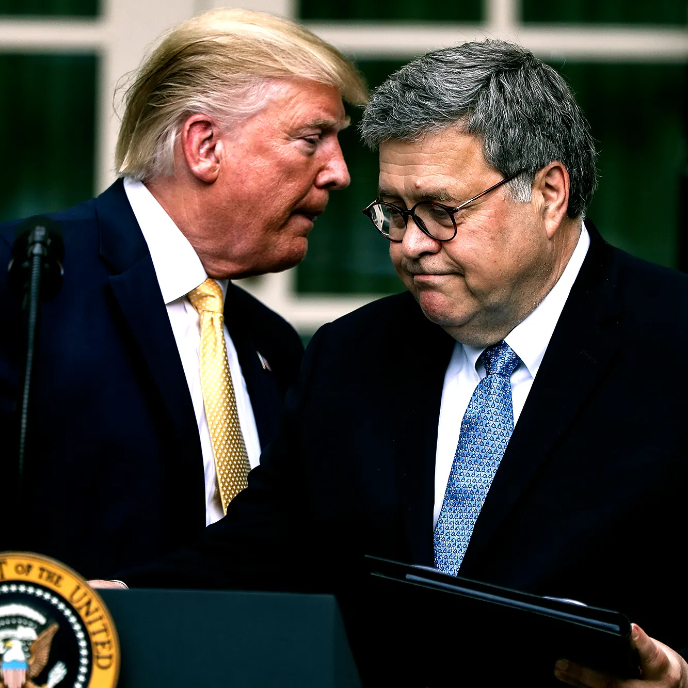
pictures_for_website_png/bill_barr.pngWilliam P. Barr served as Donald Trump’s Attorney General from 2019 to 2020. During Barr’s tenure, federal prosecutors arrested Jeffrey Epstein (July 2019) and Epstein later died in federal custody (August 2019). Barr said he personally reviewed security footage and described the death as a suicide enabled by major failures inside the jail.
Why critics consider this controversial (Trump context)
- Epstein custody failures on Trump’s watch: Barr described Epstein’s death as a “perfect storm of screw-ups,” and said he reviewed footage indicating no unauthorized entries into the housing area.
- Recusal/ethics constraints around Epstein history: Barr said he was recused from any DOJ review of Epstein’s earlier Florida plea-deal matter due to prior ties to the firm Kirkland & Ellis.
- Family backstory fueling suspicion: Barr’s father, Donald Barr (Dalton headmaster), employed Epstein as a math/science teacher at Dalton despite Epstein lacking a college degree, a fact that became widely discussed after Epstein’s 2019 arrest.
- “Space Relations” resurfacing: Donald Barr’s 1973 sci-fi novel Space Relations depicts an elite-run slave society that includes sexual exploitation; after Epstein’s crimes became globally known, the book’s themes were widely cited as eerie or “too on the nose,” even though it is fiction and not evidence.
- Break with Trump on election-fraud claims: Barr publicly said DOJ had not found fraud “on a scale that could have affected a different outcome,” undercutting Trump’s post-election narrative.
Important context: The overlap described here is political and institutional (and family-history adjacent). It is not presented as evidence that Barr participated in Epstein’s crimes.
- PBS NewsHour (Nov 2019): Barr calls Epstein death a “perfect storm of screw-ups” and says he reviewed security footage
- CBS News (Jul 9, 2019): Barr not recused from SDNY prosecution; recused from review of earlier Florida matter due to Kirkland & Ellis ties
- Wikipedia: Donald Barr (Dalton headmaster; Dalton timeline includes Epstein employment; notes Space Relations)
- Wikipedia: Space Relations (plot summary and themes)
- PBS NewsHour (Dec 2020): Barr says DOJ found no evidence of widespread fraud that would change the election outcome
Dr. Mehmet Oz: 2016 Epstein-party invitation (association context) and Trump administration role
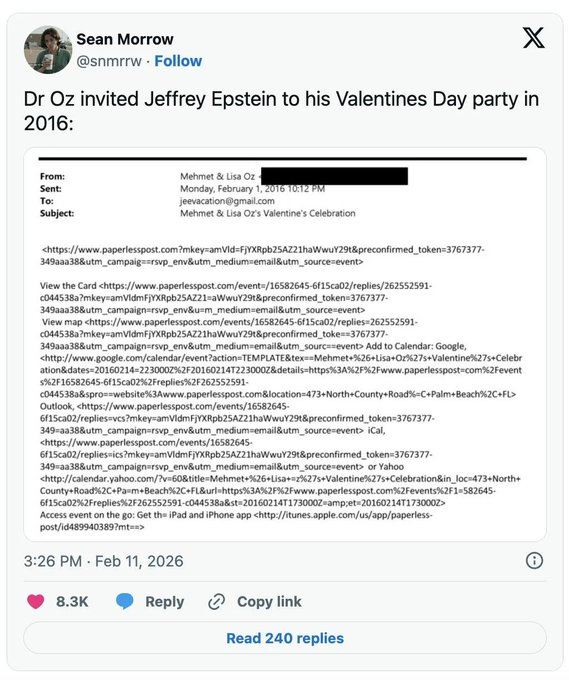
dr_oz.png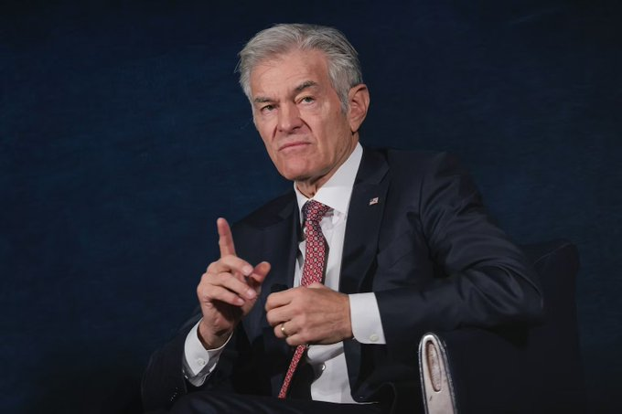
dr_oz2.pngDr. Mehmet Oz is included here due to claims that he invited Jeffrey Epstein to a Valentine’s Day party in 2016—after Epstein’s 2008 conviction was widely known. Important context: This entry documents an alleged association and does not claim Oz participated in Epstein’s crimes.
Oz is also Trump-relevant because he has served in Trump’s administration.
Jim Jordan — Trump Alliance, Ohio State Abuse Scandal & Les Wexner
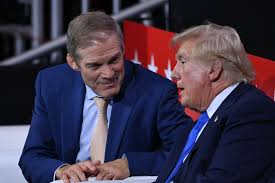
jim-jordan-trump.pngU.S. Representative Jim Jordan (R-Ohio), who has served in Congress since 2007, is widely recognized as one of Donald Trump's most loyal and vocal allies in the Republican Party. Jordan's relationship with Trump has been characterized by staunch defense of the former president during key political controversies, mutual endorsements, and shared ideological stances on issues like election integrity, investigations into Trump, and conservative populism.
Key milestones in the alliance
- Early Support and Impeachment Defense (2016–2020): Jordan emerged as a prominent defender of Trump during investigations into Russian interference in the 2016 election. He staged a sit-in protest during the 2019 impeachment inquiry over the Trump–Zelenskyy phone call and served on Trump's defense team during the first Senate impeachment trial. Trump rewarded this loyalty by awarding Jordan the Presidential Medal of Freedom in January 2021, just days before leaving office.
- 2020 Election and January 6 Aftermath: Following Trump's loss in the 2020 election, Jordan supported efforts to challenge the results, including voting against certifying the Electoral College votes and backing lawsuits to overturn the outcome. He has been accused by critics of ignoring a congressional subpoena related to the January 6 Capitol attack, though he maintains his actions were lawful.
- Leadership Roles and Endorsements (2021–Present): As Chairman of the House Judiciary Committee since 2023, Jordan has used his position to investigate what he calls the "weaponization" of federal agencies against Trump, including probes into Special Counsel Jack Smith's investigations. Trump endorsed Jordan for House Speaker in 2023, calling him a "fighter" aligned with his agenda. In 2025–2026, Jordan has praised Trump's second-term policies, such as border security and Cabinet picks, framing them as restoring American strength.
The Ohio State University sexual abuse scandal
The Ohio State University (OSU) sexual abuse scandal revolves around Dr. Richard Strauss, a team physician who sexually abused at least 177 male students—primarily athletes—between 1978 and 1998. Strauss's abuse included unnecessary genital exams, groping, and other misconduct during medical appointments. The scandal came to light in 2018, leading to an independent investigation that confirmed OSU knew of complaints as early as 1979 but failed to act decisively until suspending Strauss in 1996. OSU has since settled with over 300 survivors for hundreds of millions of dollars.
Jordan served as an assistant wrestling coach at OSU from 1986 to 1994, overlapping with Strauss's tenure. Multiple former wrestlers, including team captains and a referee, have alleged that Jordan knew about the abuse but did nothing to stop it. They claim it was "common knowledge" in the locker room, with Strauss's behavior openly discussed, and that Jordan was directly informed. One wrestler, Dunyasha Yetts, said he reported groping to Jordan in 1992, but no action was taken. Another, Adam DiSabato, testified in 2020 that Jordan called him "crying, groveling, begging" to retract abuse claims against him.
Jordan has consistently denied any knowledge, stating, "If he had, he would have dealt with it." He was deposed under oath in July 2025 as part of ongoing federal lawsuits against OSU, marking the first time he testified in the case. The 2025 HBO documentary Surviving Ohio State features survivors accusing Jordan of a cover-up, with one calling him a "liar."
Les Wexner's involvement in the OSU scandal
Les Wexner, billionaire founder of L Brands (parent of Victoria's Secret) and a major OSU donor, served on the university's Board of Trustees from 1988 to 1997, including as chairman in 1996–1997. This period overlapped with Strauss's abuse and key university actions, such as an internal investigation, denial of tenure, and Strauss's release from contracts in 1996–1997. Wexner has stated he was unaware of any allegations against Strauss and had no direct interactions with him.
In ongoing federal lawsuits by Strauss survivors against OSU, plaintiffs sought to depose Wexner to probe what board members knew about the abuse. Initial service attempts in 2025 were thwarted by security at his New Albany estate, leading to a January 2026 court order allowing alternative service. Wexner's attorneys moved to quash the subpoena in January 2026, arguing he lacked relevant knowledge and that the request was tied more to his Jeffrey Epstein connections than Strauss. However, U.S. District Judge Michael Watson denied the motion on February 11, 2026, ordering Wexner to sit for deposition within 60 days.
Survivors have demanded the removal of Wexner's name from OSU facilities, such as the Wexner Medical Center, citing his board role during the scandal. Wexner's ties to Jeffrey Epstein (including financial dealings) have amplified scrutiny, though his attorneys insist the subpoena is unrelated to Strauss. Wexner is also facing a separate House Oversight Committee subpoena regarding Epstein as of early 2026.
Implications and criticisms
Jordan's alliance with Trump has been described as "symbiotic," boosting his fundraising and influence while amplifying Trump's narratives. However, it has drawn criticism for eroding democratic norms, such as through election denialism and attacks on judicial independence. Critics label Jordan an "extremist" and accuse him of hypocrisy in pursuing Trump's enemies while ignoring his own subpoena issues. As of February 2026, Jordan continues to endorse Trump's policies, stating "No one has delivered more in one year than President Trump."
The OSU scandal remains a point of contention tied to allegations of inaction. All parties deny wrongdoing, and legal proceedings continue.
- Wikipedia: Jim Jordan — political career and controversies
- Wikipedia: Ohio State University abuse scandal
- New York Times: Wrestler says he told Jim Jordan about abuse (Adam DiSabato testimony)
- CNN: Jim Jordan deposed in Ohio State sexual abuse case
- AP News: Judge orders Les Wexner deposition in OSU Strauss case
Alan Dershowitz, Epstein allegations, and close ties to Trump

trump-dershowitz.png
dershowitz-epstein.png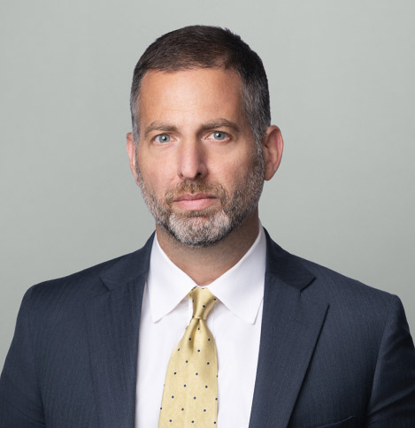
mitch-webber.png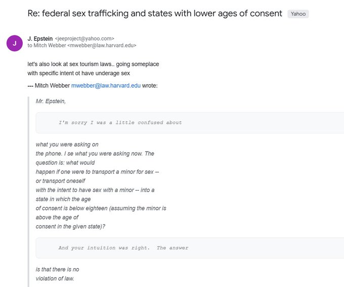
mitch-webber-epstein-email.pngAlan Dershowitz—one of Donald Trump’s most prominent legal defenders—has also represented Jeffrey Epstein and appears extensively in Epstein-related court records and public reporting. He served as a key legal advisor to Trump and was part of Trump’s defense team during his first impeachment trial in 2020.
Epstein-related allegations and records
Dershowitz has been named in multiple Epstein-related documents, most notably in allegations by Epstein survivor Virginia Giuffre, who claimed she was directed by Epstein to have sex with Dershowitz while she was underage. Dershowitz has consistently and forcefully denied the allegation.
In 2022, Giuffre publicly retracted her accusation as part of a settlement, stating she may have made a mistake regarding Dershowitz. No criminal charges were brought against him in connection with Epstein, and he has never been convicted of any Epstein-related offense.
Separately, flight logs show Dershowitz traveled multiple times on Epstein’s private plane, and emails and testimony in civil litigation place him within Epstein’s social and legal inner circle during the period when Epstein was under federal investigation.
Mitchell D. Webber: Epstein-email appearance and Trump appointment (Trump context)
Mitchell D. Webber (also reported as “Mitch Webber”) appears in the released Epstein email trove in correspondence involving legal hypotheticals about age-of-consent and related laws during the period of Epstein’s Florida investigation. Webber has said publicly that he was working as a research assistant for Alan Dershowitz and that emails sent under his name reflected Dershowitz’s direction rather than independent legal advice.
The Trump relevance is that Webber later served in the White House Counsel’s Office during Trump’s first term and Trump announced his intent to appoint Webber to the United States Holocaust Memorial Council in December 2020.
Why critics consider this relevant
This section is included because Dershowitz’s proximity to Epstein, combined with his later role as one of Trump’s most visible legal champions, is frequently cited in arguments about the broader ecosystem of elites around Trump who intersected with Epstein. Association alone is not proof of wrongdoing, but repeated overlap is commonly treated as a judgment/accountability issue.
Supporters counter that Dershowitz has been exonerated by the retraction, that no charges were ever filed, and that his impeachment role reflects his constitutional-law expertise rather than any connection to Epstein.
- NPR: Epstein court documents and references to Alan Dershowitz
- NPR: Dershowitz’s role in Trump’s first impeachment defense
- Bloomberg (2025): Epstein email trove reporting including references to Mitchell D. Webber
- Trump White House Archives (Dec 16, 2020): intent-to-appoint announcement listing Webber for the U.S. Holocaust Memorial Council
- Miami Herald: Epstein case documents, flight logs, and civil allegations
- New York Times: Giuffre retraction and Dershowitz response
Alexander Acosta’s Epstein Plea Deal and Trump’s Administration

trump-acosta.pngThis section documents an institutional crossover people frequently cite: Alexander Acosta approved Epstein’s 2007–2008 non-prosecution agreement, and Trump later appointed Acosta as U.S. Labor Secretary. Even when the connection is administrative rather than personal, critics frequently cite the appearance of proximity as a concern because the most scrutinized lenient plea deal in the Epstein story sits adjacent to Trump’s cabinet.
Acosta, appointed by Trump as U.S. Labor Secretary in 2017, previously served as the U.S. Attorney for Southern Florida in 2007–2008, where he approved Epstein’s non-prosecution agreement for federal sex-crime charges. In 2019, amid renewed scrutiny after Epstein’s re-arrest, Acosta resigned.
Steve Bannon controversies and Epstein-file communications

bannon.png
trump-bannon.pngSteve Bannon—Donald Trump’s former chief White House strategist and a central figure in Trump’s 2016 campaign—appears in reporting connected to both extensive communications with Jeffrey Epstein after Epstein’s 2008 conviction and additional scandal narratives.
Epstein-file communications
Court records and reporting show that Bannon exchanged hundreds of texts and emails with Jeffrey Epstein between 2017 and 2019, well after Epstein’s conviction for soliciting a minor. The communications reportedly included discussions of U.S. politics, Trump administration matters, and a proposed documentary project aimed at rehabilitating Epstein’s public image.
Reporting also indicates Bannon discussed logistical assistance with Epstein, including references to using Epstein’s private aircraft. For many readers, Bannon’s willingness to engage closely with Epstein—despite Epstein’s widely known criminal history— raises questions about judgment and elite networking norms. Supporters counter that communication alone does not imply criminal involvement.
Trump pardon for “We Build the Wall” fraud case (documented)
In August 2020, federal prosecutors charged Bannon in the Southern District of New York with conspiracy charges tied to an online fundraising campaign called “We Build the Wall,” alleging donors were misled about how funds would be used. Trump pardoned Bannon on January 19, 2021, ending the federal prosecution. Reporting has noted that presidential pardons apply to federal offenses only; Bannon later faced New York State charges connected to the same fundraising effort and pleaded guilty in February 2025, receiving a conditional-discharge sentence.
Florida house allegations (unproven)
Separately, allegations have circulated in alternative and tabloid-style reporting regarding a Florida property connected to Bannon’s ex-wife, where witnesses alleged the house was used for drug use and the filming of pornographic material. Some accounts go further, alleging involvement of underage individuals.
Important context: These claims have not resulted in criminal charges against Bannon, are not substantiated by court convictions, and are primarily sourced from witness statements and less-established outlets. They are included here because they circulate widely in discussions of Trump-adjacent figures and contribute to a broader perception, described by critics, that the surrounding ecosystem is repeatedly entangled in scandal narratives.
Why critics consider this relevant
The concern here is the combination of Epstein communications, alleged attempts to manage Epstein’s reputation, and unresolved scandal narratives around Bannon. Supporters respond that none of this constitutes proof of wrongdoing and that it reflects an association-based inference rather than direct evidence.
- PBS NewsHour: Overview of Epstein files and associated figures (includes Bannon context)
- PBS NewsHour: Unsealed Epstein documents and communications
- CBS News: Epstein files release live updates (general context)
- Washington Post: Epstein documents detailing communications with Bannon
- American Journal: Witness allegations regarding Florida property (note: less-established outlet)
- DOJ Office of the Pardon Attorney: Trump clemency list (includes January 2021 pardons)
- PBS NewsHour (Jan 2021): reporting on Trump’s pardon of Steve Bannon
- CNBC (Feb 2025): Bannon’s NY state guilty plea and conditional discharge; notes the earlier Trump pardon
Keith Frankel: Mar-a-Lago social access, hydroxychloroquine outreach, and Epstein-file mentions (reported)
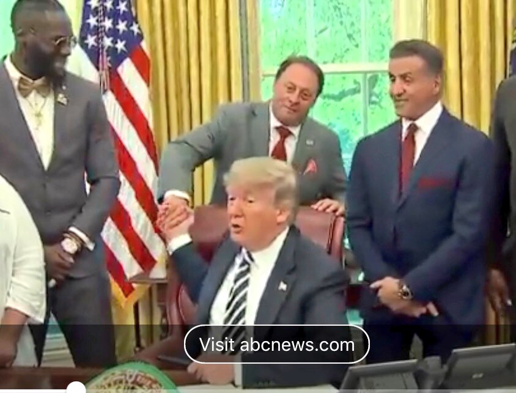
keith_frankel.pngkeith_frankel2.pngKeith Frankel is a nutritional-supplements executive who has appeared in multiple news reports as a Mar-a-Lago social acquaintance of Donald Trump. He appears in this dossier due to documented instances where reporting describes direct access to Trump during the presidency and, separately, online claims that his name appears in the DOJ’s released Epstein-document archives.
Trump ties (documented in mainstream reporting)
- Oval Office event (May 2018): Pool-photo captions and coverage of Trump’s posthumous pardon of boxer Jack Johnson list Frankel among those present.
- Hydroxychloroquine outreach (reported): In 2020 reporting during the COVID-19 pandemic, Frankel was described as a vitamins executive who occasionally socialized with Trump at Mar-a-Lago; he said Trump asked him to contact California Gov. Gavin Newsom about a potential hydroxychloroquine purchase from an Indian manufacturer.
Epstein-file mentions (reported / unverified here)
Online commentary around the 2025–2026 DOJ releases has claimed Frankel is referenced in Epstein-related materials, often framed as family-finance / trust-management context. The DOJ-hosted PDFs are age-gated and include sensitive material; this entry therefore treats such claims as unverified unless independently corroborated by reputable reporting.
“Body boxes” claim (viral rumor; not confirmed)
Some social-media posts have circulated screenshots alleging an email subject line referencing “body boxes” in connection with Frankel and Epstein. As of this entry’s writing, this specific claim has not been corroborated in mainstream reporting or official DOJ summaries. Interpretive caution: The phrase could plausibly refer to non-criminal business, medical, or packaging contexts; it could also be fabricated or misleadingly excerpted.
- NPR (May 24, 2018): Jack Johnson pardon coverage listing Keith Frankel among attendees
- The Week (May 2020): hydroxychloroquine reporting mentioning Frankel’s call to Newsom (cites Washington Post)
- DOJ: Epstein files portal (primary document library; age verification required for some PDFs)
- DOJ Epstein disclosures (PDF, age-gated): EFTA01826280 (document referenced in online discussions about the Frankel family)
- DOJ Epstein disclosures (PDF, age-gated): EFTA02429595 (document referenced in online discussions about the Frankel family)
Tom Barrack: Trump inaugural chair, UAE-agent case, and Epstein email overlap
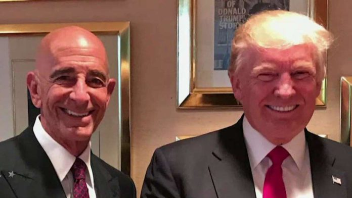
pictures_for_website_png/tom_barack.pngTom Barrack (Thomas J. Barrack Jr.) is a billionaire investor who became one of Donald Trump’s best-known allies in business and Republican fundraising. Barrack chaired Trump’s 2017 Presidential Inaugural Committee and has been described in reporting as a longtime friend and adviser.
Foreign-influence case (documented, ended in acquittal)
Federal prosecutors charged Barrack in 2021 with unlawfully acting as an agent of the United Arab Emirates and related offenses. Barrack pleaded not guilty and was acquitted at trial in 2022.
Epstein-file overlap (association context)
Barrack has also been referenced in reporting about emails and contacts connected to Jeffrey Epstein, including a 2016 email exchange that drew renewed scrutiny after later document releases. Important context: This entry documents reported communications/associations; it does not allege Barrack participated in Epstein’s crimes.
- CNN (Nov 15, 2016): Trump names Tom Barrack to chair the Presidential Inaugural Committee
- POLITICO (Jul 20, 2021): Barrack arrested/charged in alleged foreign-agent case
- DOJ (National Security Division): FARA / related recent cases (includes Barrack matter summary)
- POLITICO (Nov 4, 2022): Barrack acquitted at trial
Leon Black: 1996 Moscow trip with Trump and deep ties to Epstein’s network
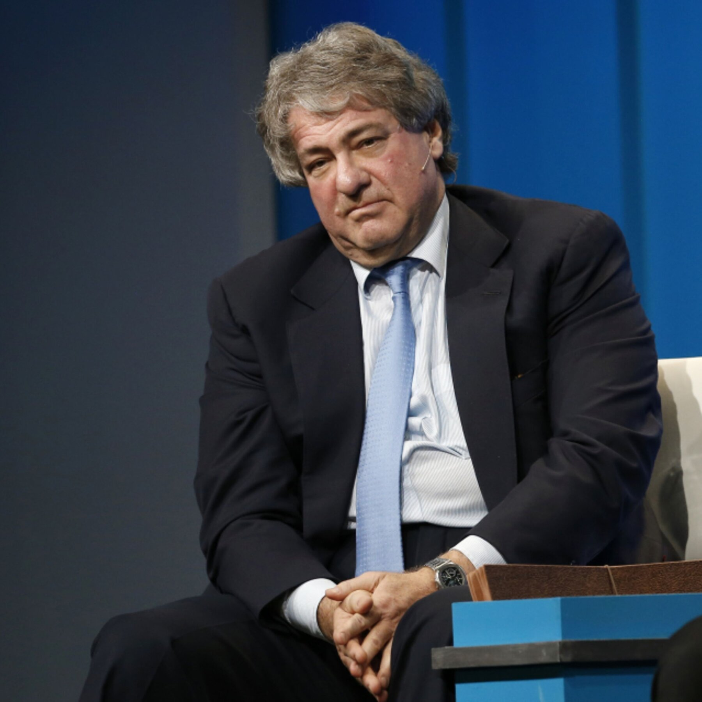
pictures_for_website_png/leon_black.png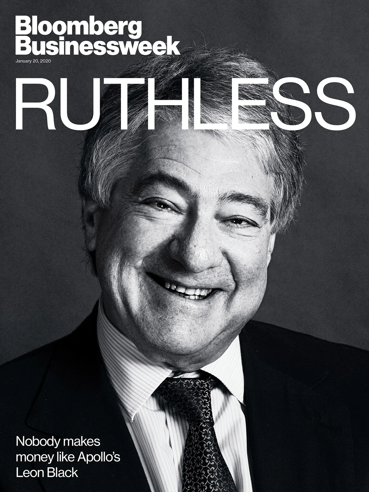
pictures_for_website_png/leon_black2.pngLeon Black is a billionaire financier and co-founder of Apollo Global Management. His Trump connection is mostly indirect and episodic (shared elite circles), while his Epstein connection is more sustained and heavily documented through financial dealings and later civil litigation.
Trump overlaps (documented)
- 1996 Moscow trip: A U.S. Senate Intelligence Committee report on Russian interference in the 2016 election references a 1996 Moscow trip involving Trump and Leon Black.
- Family/political link (DFC): Congress records show Trump nominated (and the Senate later confirmed) Black’s son, Benjamin Black, to lead the U.S. International Development Finance Corporation.
Epstein payments and institutional scrutiny (documented)
Black acknowledged paying Jeffrey Epstein for tax and estate-planning services in the years after Epstein’s 2008 conviction. Apollo commissioned an outside review of the relationship, and later reporting and congressional scrutiny focused on the size and characterization of the payments.
Allegations in civil litigation (unproven)
Separate from the payments, multiple civil suits have accused Black of sexual assault connected to Epstein’s Manhattan townhouse. Black has denied wrongdoing. Reporting has noted that prosecutors reviewed certain allegations but did not bring criminal charges.
- U.S. Senate Select Committee on Intelligence (2020): Russia report (Volume 5 PDF; includes 1996 Moscow-trip references)
- Vanity Fair (Sep 2020): reporting on the Senate Intel Russia report and the 1996 Moscow trip
- CNBC (Jan 2021): Apollo review findings, including Epstein payment totals
- U.S. Senate Finance Committee (Jul 2023): Wyden statement on investigation into Black’s Epstein ties
- Congress.gov: nomination/confirmation record for Benjamin Black (DFC CEO)
- Reuters (Jul 25, 2023): lawsuit alleging rape in Epstein’s townhouse (Black denies)
- Reuters (Feb 20, 2024): one civil lawsuit withdrawn/dropped
- X.com: post about Leon Black (social media link)
Melania Trump’s Modeling Past

melania-modeling.png
melania-modeling2.png
melania-modeling3.pngMelania Trump’s modeling history included provocative published work that resurfaced during the 2016 campaign. This point is often raised in “values vs image” debates, not as an allegation of illegality. Critics sometimes frame the nude or semi-nude imagery as a break from earlier expectations of First Lady “presentation,” while others consider it irrelevant.
Brett Ratner, the Melania documentary, and overlap with Trump- and Epstein-adjacent networks

brett-ratner.png
brett-ratner2.pngBrett Ratner—whose Hollywood career stalled after multiple sexual-misconduct allegations in 2017 (which he has denied)—returned to prominence by directing and producing a documentary centered on Melania Trump in the lead-up to Donald Trump’s second inauguration.
Documentary project (reported)
- Reporting described an Amazon MGM Studios–backed documentary about Melania Trump directed by Ratner, with a reported licensing figure and broad distribution plan.
- Coverage has characterized the film as largely promotional, focusing on public-facing routines and image management rather than investigative detail.
Trump-world connections critics highlight
- Production-finance ties: Ratner co-founded RatPac and participated in film-financing partnerships that included Trump-era Treasury Secretary Steven Mnuchin’s Dune Entertainment (RatPac-Dune).
- Comeback vehicle reporting: Entertainment reporting has described plans for a Ratner-directed Rush Hour 4 and framed the effort as a high-profile comeback after the 2017 allegations.
Epstein-file references (association context)
Ratner has also been discussed online in connection with document/photo releases commonly referred to as the “Epstein files,” including images and email/social-circle references. No allegation of wrongdoing is asserted here based on those mentions; the point is the recurring pattern of elite-network overlap that people cite as concerning.
Why critics consider this relevant
Ratner’s return via a Trump-family project, paired with business ties to Trump-era figures and periodic Epstein-file adjacency, is often cited as an example of reputational exile being reversible for well-connected insiders—especially in media ecosystems that reward loyalty and access.
- Variety: Amazon MGM Studios Melania documentary (Ratner directing; reported licensing figure)
- The Hollywood Reporter: Brett Ratner to direct Melania Trump documentary for Amazon
- Wikipedia: RatPac Entertainment / RatPac-Dune partnership (Mnuchin/Dune connection indexing)
- The Hollywood Reporter: “Rush Hour 4” comeback reporting involving Ratner
- Air Mail: discussion of Peggy Siegal emails in Epstein-file releases (secondary reporting)
Pageant ties with John Casablancas and teen models

trump-john-casablancas.png
trump-john-casablancas2.pngTrump partnered with John Casablancas—the Elite Model Management founder later accused of exploiting underage models— around teen beauty-pageant environments. Reporting describes Trump sponsoring and judging Casablancas’s “Look of the Year” contest, including events involving contestants as young as 14 and social access to powerful men. Even if a given setting doesn’t prove wrongdoing by Trump, some readers consider repeatedly choosing those environments and partners to be concerning.
Pageants and model-contest allegations: dressing rooms, recorded remarks, and related reporting
Recorded remarks (Howard Stern, 2005): In 2005 audio discussed in multiple outlets, Trump described going backstage at pageants he owned, saying contestants were sometimes “standing there with no clothes” and that he could enter because he was the owner and was “inspecting.”
Contestant accounts: Multiple former Miss USA and Miss Teen USA contestants have described Trump entering dressing-room areas while contestants were undressed. Coverage includes accounts from the 2001 Miss USA rehearsal context and reporting on the 1997 Miss Teen USA allegations.
1991 “Look of the Year” (Guardian reporting): The Guardian reported on Elite Model Management’s “Look of the Year” contests and related allegations, including that contestants were often teenagers (with reporting citing an average age around 15 in a 1992 Fox documentary), and describing allegations of exploitation in the wider ecosystem surrounding the contest and organizers. Trump was a judge in 1991.
Links to additional claims: Several widely shared social-media posts circulate additional first-person claims about Trump and pageants. Where these are not backed by mainstream reporting in the link itself, they are included as social-media references for readers to evaluate.
- X.com: Howard Stern clip post (social media link)
- X.com: post summarizing Guardian’s 1991 “Look of the Year” reporting (social media link)
- X.com: pageant-model claim post (social media link)
- X.com: additional pageant-related post (social media link)
- The Guardian (Mar 14, 2020): Trump hosted “Look of the Year”
- The Guardian (Oct 12, 2016): Miss USA contestant account + Stern-audio quote excerpt
- CNN (Oct 8, 2016): reporting on Trump’s Howard Stern remarks (includes pageant backstage quote)
- PolitiFact (Oct 18, 2016): summary of Miss Teen USA dressing-room allegations and evidentiary limits
- CBS News: pageant dressing-room accounts
- CBS News: audio and pageant-related comments
“Ambrosia,” blood-transfusion culture, and Epstein-adjacent themes

vance-thiel.pngJ.D. Vance is sometimes discussed online in the same orbit as Peter Thiel’s interest in a company called Ambrosia, known for marketing “young plasma” transfusions for anti-aging. The reason this shows up in Epstein-adjacent discourse is largely associative: “blood” references and elite biohacking themes are sometimes invoked for rhetorical association even when the connections are indirect.
- The Guardian (Jan 4, 2017): Ambrosia “young blood” profile
- CBS News: Epstein files release live updates (general context)
- X.com: post circulating a purported Epstein-files excerpt about wanting blood (social media link)
- X.com: post circulating a purported Epstein-files excerpt mentioning Peter Thiel (social media link)
“The Devil’s Advocate” filmed in Trump’s penthouse

devils-advocate-al-pacino-trumps-home.png
trump-in-penthouse.png
devils-advocate-poster.pngA recurring pop-culture note: the film The Devil’s Advocate used Trump’s own penthouse for scenes tied to Al Pacino’s character (the Devil). This is not evidence of anything criminal; it’s included as a cultural reference that some people cite when discussing Trump’s public symbolism and brand imagery.
Erika Kirk (Frantzve), Romania charity work, and the Otto Busher association (rumor + allegation context)
Erika Kirk (formerly Erika Frantzve), linked in public attention to Turning Point USA via her marriage to Charlie Kirk, has faced scrutiny related to her past humanitarian work in Romania through her nonprofit Everyday Heroes Like You and its Romanian Angels initiative. The program reportedly operated around 2011–2013 and described its mission as delivering aid (e.g., gifts and supplies) to children in Romanian state orphanages and placement centers, including in and around Constanța. Supporters describe this as straightforward charity work; critics argue that the setting and relationships involved raise concerns, even if no proven wrongdoing is established.

erika-kirk.png1) Claimed link between Kirk and Col. Otto A. Busher III
Critics point to promotional materials and social posts from the 2011–2012 period in which Kirk allegedly thanked Col. Otto A. Busher III, described in online commentary as a senior U.S. Army commander associated with the Mihail Kogălniceanu Air Base (MKAB) near Constanța, for logistical support (access, transport, coordination) related to charity visits. Critics argue that, because the work involved vulnerable children and a high-risk trafficking environment, this collaboration creates reputational risk—at minimum as an appearance concern, and at maximum as a basis for heightened scrutiny (even if no direct evidence implicates Kirk in wrongdoing).
2) Trafficking/exploitation allegations against Busher (as circulated online)
The core concern narrative hinges on allegations that Busher and associates were involved in trafficking and exploitation tied to MKAB. As summarized in online threads, these allegations are often attributed to a 2019 affidavit/complaint said to have been submitted to Romania’s DIICOT by whistleblower Ana-Maria Nuciu (described online as a former U.S. Army translator at MKAB from 2008–2014). The allegation set commonly includes claims of a prostitution/trafficking operation on or around the base during roughly 2010–2015, including claims that minors were involved. Romanian media coverage has described these claims in the form of a criminal complaint narrative rather than as an adjudicated fact pattern, and at least one Romanian outlet published an analysis emphasizing that a complaint is not a court finding and disputing the certainty of the “brothel” framing. Some commentary attributes the absence of prosecution to jurisdictional and status-of-forces issues; this card does not cite a public court judgment establishing that explanation.
3) Timeline overlap and broader Romania context used by critics
Critics emphasize that the peak period of Romanian Angels activity (commonly stated as 2011–2012) overlaps with the alleged start of the trafficking operation timeline (often stated as beginning around 2010). They also point to Romania’s documented history of child exploitation in orphanage systems to argue that any charity work involving institutionalized children requires extraordinary safeguards and transparency.
4) Why critics describe the association as concerning
- Proximity narrative: Working with a commander later accused online of trafficking activity is treated as an association-based concern, especially given the involvement of vulnerable children and an area described as high-risk.
- Pattern claims: Critics often connect the Romania story to broader “elite network” theories (pageants, politics, donors, or unrelated scandals). These broader linkages are typically speculative and should be labeled as such.
- Transparency criticism: Critics argue that public explanations from Kirk have been limited, and that the re-circulation of documents/threads spikes when her public profile rises.
- Rumor amplification: Separate viral claims (e.g., “banned from Romania”) are frequently repeated; mainstream fact-checking coverage has described some of these claims as unsupported.
5) Recent tour programming: Greg Laurie / Harvest Christian Fellowship (Romania lawsuit context)
In 2026, reporting described Erika Kirk kicking off her “Make Heaven Crowded” tour at a Harvest Christian Fellowship venue with Greg Laurie on the program. Separately, mainstream reporting has described multiple civil lawsuits filed in U.S. federal court alleging that a former Harvest Christian Fellowship pastor/missionary (Paul Havsgaard) abused and trafficked children at a shelter/children’s homes in Romania, and that church leadership (including Greg Laurie and Harvest) was negligent in oversight. Harvest and Laurie have denied allegations and have said they intend to defend the cases.
Interpretive context: Critics treat this as a pattern argument: charity/mission and political-faith ecosystems involving vulnerable populations in Romania recurring in proximity to figures facing serious allegations or civil litigation. Supporters treat the lawsuits as unproven claims and argue that shared stages do not establish complicity.
Counterpoints and limits
The central limitation is straightforward: no court judgment, arrest record, or official finding is presented here as directly linking Erika Kirk to trafficking. The concern narrative relies on (1) alleged promotional “thank you” materials, (2) a whistleblower complaint described in online threads and some Romanian coverage, and (3) inference from geographic/timeline overlap. Readers should treat this as inferred risk and reputational critique—not proven guilt.
- Primary materials: Add links to the original charity promo video/posts (if available), plus any direct documentary evidence of the “thank you” reference. (Example: Vimeo/YouTube link to the exact promo video; archived page links.)
- Affidavit / complaint: If you have the DIICOT filing or a verifiable copy, link it directly (PDF scan or a reputable repository). If you only have screenshots, label them clearly as screenshots and state what you can’t independently verify.
- Fact-check coverage: Keep links to mainstream debunks where relevant (e.g., “banned from Romania” claims).
- Greg Laurie / Harvest lawsuit context (Romania):
- Romanian media discussion of the DIICOT complaint narrative (MKAB / “brothel” framing):
- Rumor ecosystem example (X): X thread example used to illustrate circulating claims
- Tour-controversy post (X): X.com: post linking the tour and lawsuit narratives (social media link)
How Trump personally profited while his Atlantic City casinos went bankrupt

trump-casino.pngDonald Trump repeatedly cited his Atlantic City casino bankruptcies as evidence of business savvy, while detailed reporting shows that Trump personally made substantial money even as the casino companies themselves collapsed, investors lost billions, contractors went unpaid, and thousands of workers were affected.
Between 1991 and 2009, Trump-affiliated casino companies filed for Chapter 11 bankruptcy protection at least six times, primarily involving:
- Trump Taj Mahal (1991)
- Trump Plaza Hotel and Casino (1992)
- Trump Castle Hotel and Casino (1992)
- Trump Hotels & Casino Resorts (2004)
- Trump Entertainment Resorts (2009)
- One additional related restructuring filing
These bankruptcies were driven by heavy leverage (often via high-interest junk bonds), declining Atlantic City revenues, increased regional competition, and operational losses. Public filings and press coverage describe billions of dollars in cumulative losses, with bondholders, investors, contractors, and employees absorbing the damage.
How Trump still made money
Despite the failures of the casino entities, Trump personally profited through several well-documented mechanisms:
- Salary, bonuses, and management fees: As chairman and CEO of Trump Hotels & Casino Resorts, Trump collected large annual compensation packages. Reporting shows that across the lifespan of the company—despite losses exceeding $1 billion—Trump received an estimated $80+ million in salary, bonuses, jet usage fees, and payments for licensing his name. Notably, his base salary increased after one bankruptcy filing.
- Shifting personal debt onto the companies: During the early 1990s, Trump negotiated restructurings that moved hundreds of millions of dollars of personal liabilities onto the casino corporations, significantly reducing his own exposure while creditors took losses.
- Asset transfers and self-dealing structures: Trump sold casino assets to publicly traded Trump entities at prices critics described as inflated, collecting fees and cash while transferring risk and debt to shareholders and bondholders.
- Tax advantages: Massive reported losses—including a $916 million net operating loss disclosed in the mid-1990s— allowed Trump to offset income for years, potentially avoiding federal income taxes while continuing to earn money elsewhere.
Trump’s defense vs. critics’ view
Trump has repeatedly argued that these bankruptcies represent a legitimate and “smart” use of U.S. bankruptcy law, allowing him to restructure debt, protect jobs, and exit a declining market profitably. He has publicly stated that he “made a lot of money” in Atlantic City and considers the outcomes a success.
Critics counter that this framing ignores who paid the price: investors whose bonds became nearly worthless, contractors who were left unpaid or underpaid, workers who lost jobs or benefits, and a city already in economic decline. From this perspective, Trump’s strategy is seen less as entrepreneurial brilliance and more as a pattern of using other people’s money to shield himself from downside risk while extracting personal gain.
- Bloomberg: How Trump made millions while Atlantic City casinos failed
- New York Times: Trump’s reported $916 million loss and tax implications
- Washington Post Fact Checker: Trump bankruptcies explained
- Fortune: Trump’s Atlantic City casino record
- Mother Jones: Who lost when Trump’s casinos collapsed
- SEC filings and bankruptcy court records for Trump Hotels & Casino Resorts (1990s–2009)
Trump University and crypto controversies

trump-university.pngThis card groups together two clusters of controversy: Trump University (fraud allegations that ended in a major settlement) and more recent Trump-aligned crypto ventures (scrutiny over pay-for-access concerns, conflicts of interest, and marketing-driven monetization). Interpretive context: Even when individual actions are legal or contested, many readers treat “access + branding + money flow” as a red flag because it blurs private gain and public office.
Key points (fast scan)
- Trump University: NY AG alleged an unlicensed “university” used a funnel from free events to paid products, including “Elite” packages priced $10,000–$35,000.
- Resolution: Trump agreed to a $25 million settlement without admitting wrongdoing; courts later approved/cleared the settlement process.
- $TRUMP memecoin: The Guardian reported a May 2025 dinner/White House tour pitched at top purchasers, and estimated about $148 million generated, including from anonymous/foreign buyers.
- WLF: The Guardian reported on World Liberty Financial promotion and described watchdog/scholar warnings about deregulatory moves compounding perceived conflicts.
- $MELANIA: WIRED summarized a class-action filing alleging a repeatable memecoin pump-and-dump playbook; the filing did not allege wrongdoing by Melania Trump.
Trump University: marketing claims, pricing tiers, and fraud allegations
Trump University (also known as the Trump Entrepreneur Institute) marketed itself as real-estate education promising access to Trump’s “secrets” and to “handpicked” experts. The New York Attorney General alleged it was an unlicensed institute that used deceptive marketing to drive people into free workshops, then pressure them into increasingly expensive products.
- Alleged funnel (NY AG): free workshop → $1,495 three-day seminar → “Elite” mentorship packages priced $10,000–$35,000.
- Alleged sales pressure (NY AG): instructors encouraged attendees to raise credit-card limits during breaks.
- Alleged branding/support claims (NY AG): “university” branding without required charter/license in New York, university-like seal/certificates, and promised support many customers said they did not receive.
- Restitution allegations (NY AG): restitution sought for 5,000+ consumers and alleged losses of $40M+.
Settlement and court outcomes: Trump agreed to a $25 million settlement to resolve multiple cases without admitting wrongdoing. Later coverage described court approval and an appeals-court decision allowing the settlement to proceed.
Crypto: $TRUMP memecoin “pay-for-access” concerns and regulatory/conflict concerns
The core concern raised in reporting is an appearance of conflicts of interest: presidential access, branding, and policy decisions affecting crypto oversight occurring in the same window as private crypto profit.
- $TRUMP dinner/tour (Guardian reporting): A May 2025 dinner and White House tour for top purchasers was described as designed to spur purchases and to have generated about $148M, including from anonymous/foreign buyers.
- WLF (Guardian reporting): Coverage described World Liberty Financial promotion and cited watchdog/scholar warnings that deregulatory moves (DOJ/SEC and elsewhere) compound perceived conflicts when paired with personal crypto profit.
$MELANIA: lawsuit allegations about pump-and-dump mechanics (as reported)
Separately, WIRED reported on an amended filing in a federal class-action suit alleging that a network of defendants used public-figure branding in memecoin launches, including $MELANIA, as part of a repeatable “pump-and-dump” playbook. WIRED’s reporting emphasized the filing does not allege wrongdoing by Melania Trump.
Other Trump-branded ventures critics cite as a pattern (selected examples)
Beyond Trump University and crypto, critics often point to other Trump-branded ventures and endorsements as a recurring pattern: heavy marketing around Trump’s name, consumers or partners taking losses, and disputes ending in litigation or shutdowns. This section is intentionally selective and limited to examples that are well-documented in major reporting or official filings.
- Trump Foundation (NY AG enforcement): New York’s attorney general filed suit alleging persistent legal violations, including unlawful political coordination and self-dealing transactions, and later announced a stipulation to dissolve the foundation under judicial supervision.
- The Trump Network (health/MLM branding): STAT reported on Trump’s branding relationship with a network-marketing health-products business and the scientific criticisms raised about its testing/supplement claims, while describing Trump’s role as licensing/branding rather than product development.
- Trump Steaks (short-lived branded product line): NBC News reviewed the brief 2007 launch with Sharper Image and QVC and the later public disputes about whether “Trump Steaks” still existed as a product.
- Trump Vodka: Bloomberg documented the licensing venture’s marketing, operational problems, and eventual collapse in the U.S. market.
- ACN endorsement litigation (allegations): A federal class-action complaint alleged that Trump and family members promoted a multilevel-marketing “business opportunity” while making misleading claims and concealing financial ties; the allegations are contested and were litigated.
- Post-2020 monetization products: AP reporting on financial disclosures and Trump-business activity has described revenue streams from items like NFTs and Trump-endorsed products, and has also described how crypto ventures (including memecoins) can generate fees and raise conflict-of-interest concerns.
- Wall Street Journal: Trump University settlement
- New York AG (Aug 25, 2013): lawsuit press release alleging deceptive practices, pricing tiers, and unlicensed “university” branding
- NBC News (Feb 6, 2018): federal court approves Trump University settlement (describes merged cases)
- AP News (Feb 6, 2018): appeals court upholds settlement agreement
- ABC News (Mar 30, 2018): judge finalizes settlement (overview)
- The Guardian (June 17, 2025): $TRUMP coin reporting
- House Judiciary Committee Democrats staff report PDF: Trump, crypto, and corruption allegations (primary partisan document)
- House Judiciary Committee Democrats press release linking the staff report (context)
- WIRED: reporting on lawsuit allegations involving $MELANIA (notes no wrongdoing alleged by Melania Trump)
- New York AG (June 14, 2018): Trump Foundation lawsuit (allegations; $2.8M restitution sought; governance failures described)
- New York AG (Dec 18, 2018): stipulation dissolving Trump Foundation under judicial supervision
- STAT (Mar 2, 2016): Trump Network health-products/MLM reporting and scientific criticism context
- Courthouse News (Oct 2018): ACN class-action complaint summary (allegations; contested)
- NBC News (Mar 2016): Trump Steaks history and trademark/product status reporting
- Bloomberg (2016): Trump Vodka venture history
- AP News (June 2024): financial disclosures including Bible royalties and NFT licensing income
- AP News: reporting on Trump-family business monetization and memecoin/WLF conflict-of-interest concerns
Tabloids and “catch-and-kill” politics

trump-tabloid.png
radar.pngThis section summarizes reporting on Trump’s long-running relationship with tabloid media ecosystems, including “catch-and-kill” practices— the purchase and suppression of stories that could be damaging. Interpretive context: Readers often find this concerning because it treats reputations as something that can be bought, buried, or weaponized.
Radar (magazine / Radar Online): Epstein financing and AMI-era Trump ties
Radar Online, a digital celebrity news site, has had—at various points in its history—ownership and editorial connections linked to individuals with close ties to Trump, particularly through American Media Inc. (AMI) and its former CEO David Pecker.
- Launch-era financing (2004): Contemporaneous reporting described Jeffrey Epstein as an early financier/investor in Radar magazine’s financing.
- Later AMI context: The RadarOnline brand sat within AMI’s tabloid portfolio under David Pecker (who became central in reporting and court testimony about “catch and kill”).
- McDougal ecosystem: Radar Online is often discussed as part of the broader AMI ecosystem implicated in the McDougal hush-money narrative.
- Story removal (Politico, Apr 2024): Politico reported a Radar Online story tied to Karen McDougal was removed during the 2024 hush-money trial news cycle.
- Dylan Howard era: RadarOnline.com was later sold to a group associated with former AMI executive Dylan Howard.
- Why this gets linked together (interpretive): Some readers treat the chain—Epstein near early financing, AMI/Pecker later controlling tabloid brands, and documented story suppression—as a single “reputation management” ecosystem.
The National Enquirer / AMI: pro-Trump tabloid operations in 2015–2016
The National Enquirer and its former parent company, American Media Inc. (AMI), had deep ties to Trump, particularly around the 2016 election. Under then-CEO David Pecker (a longtime friend of Trump), reporting and court testimony described a pattern where the tabloid helped Trump by suppressing damaging stories while attacking political opponents.
“Catch and kill” tactics: Reporting and later enforcement actions describe AMI paying to acquire rights to negative stories about Trump with the intent to keep them from becoming public before the election.
Weinstein overlap (reported): Ronan Farrow reported that AMI (publisher of the National Enquirer) also worked with Harvey Weinstein on reputation-management efforts, including email exchanges with AMI executive Dylan Howard about material related to Weinstein accusers; Howard said AMI sought information but did not publish it.
McDougal and the doorman claim: The best-documented example is AMI’s $150,000 payment to Karen McDougal for her story. Separate reporting also described a $30,000 payment to a doorman who claimed Trump had an illegitimate child.
Smear campaigns: The Enquirer also published sensational and unsubstantiated attacks on Trump’s rivals (including Ted Cruz and Hillary Clinton) that Trump sometimes echoed publicly.
The broader tabloid incentive problem: This style of media can operate as a political tool: manufacturing scandal, laundering rumors into mass circulation, and pressuring or rewarding sources. “Catch-and-kill” is the inverse—buying damaging information to prevent publication.
Legal consequences: AMI entered a 2018 non-prosecution agreement and later faced election-law enforcement consequences; the FEC fined AMI’s successor company $187,500 related to the McDougal payment and suppression decision.
End of ties: After legal scandals, AMI sold the National Enquirer in 2019 and Pecker later stepped down as CEO.
Tabloid harassment of Michael Jackson (and why critics cite it)
This section also uses Michael Jackson as an example of tabloid dynamics: Jackson publicly addressed rumor culture in his song “Tabloid Junkie”. The reason it is mentioned here is interpretive—Trump has publicly described Jackson as a friend, and some readers see it as illustrating how the tabloid ecosystem can both manufacture scandal and bury it.
- The Guardian: catch-and-kill admission
- The Guardian: David Pecker profile and relationship with Trump
- The New Yorker (Ronan Farrow, Nov 2017): reporting on Weinstein’s investigations and AMI/Dylan Howard emails
- NPR (Oct 15, 2019): Farrow interview discussing AMI “catch and kill” and Weinstein overlap
- The Guardian (Mar 14, 2020): “Look of the Year” reporting (teen contestants; exploitation allegations around the ecosystem)
- The Guardian (Apr 24, 2024): How the National Enquirer boosted Trump and smeared opponents
- Center for Public Integrity: analysis of the Trump/Pecker tabloid relationship and catch-and-kill dynamics
- PBS News: Scandal-plagued National Enquirer sold; overview of catch-and-kill admissions and timeline
- PBS News: FEC fine ($187,500) and McDougal payment details
- NYT: Michael Cohen / AMI tabloid deal reporting context (McDougal ecosystem)
- Politico: Radar story removed (April 2024)
- NYT (2004): Radar magazine financing line-up (Epstein named as financier/investor in contemporaneous reporting)
- New York Post: Radar Online sold to Dylan Howard (2021)
- The Daily Beast: Radar launch-era photo/caption context (Epstein at Radar event in 2005, as referenced in later coverage)
- Tabloid Junkie (song): overview of Michael Jackson’s tabloid-critique track
- TIME: Trump statement describing Michael Jackson as a “very good friend”
Conclusion: Context, Not Conviction — and an Invitation to Clarify

trump-epstein.pngThe purpose of this compilation is not to declare guilt or innocence, but to lay out reported facts, allegations, and associations that many readers consider relevant to public trust. Some items above are strongly documented in mainstream reporting; others are explicitly labeled unverified or contested.
If Trump, his representatives, or defenders believe any section is missing context, inaccurate, or misleading, this page is intended to be updated: clarifications, primary documents, and credible rebuttals can be added directly under the relevant section so readers can compare claims side-by-side.
Heuristic (interpretive):
If it quacks like a duck,
if it walks like a duck,
if it hangs out with all the other ducks, maybe it’s reasonable to infer that it’s a duck.
Trump’s Social Circle with Jeffrey Epstein and Ghislaine Maxwell
trump-epstein.pngtrump-epstein-melania-ghislane.pngtrump-ghislane.pngDonald Trump had a social and professional relationship with financier Jeffrey Epstein, who was later convicted of sex offenses, that dates back to the late 1980s and 1990s. Footage from 1992 shows Trump and Epstein together at a Mar-a-Lago party, laughing, pointing at young women, and enjoying each other’s company. In 2000, Trump and his then-girlfriend (now wife) Melania were photographed socializing with Epstein and British socialite Ghislaine Maxwell at Trump’s Palm Beach club. In a 2002 interview, Trump spoke of Epstein as a “terrific guy,” noting “he likes beautiful women as much as I do, and many of them are on the younger side.”
These comments and interactions, now viewed in light of Epstein’s 2008 conviction for soliciting a minor and 2019 sex trafficking charges, have raised questions about the extent and nature of Trump’s friendship with Epstein. Trump has since downplayed his ties to Epstein, claiming they fell out around 2004 and stating in 2019, “I was not a fan of his.” The exact cause of their falling-out remains unclear, though one account suggests they clashed in 2004 over bidding on the same Palm Beach mansion.
Epstein was a member of Trump’s Palm Beach club, Mar-a-Lago, for many years. One of Epstein’s most prominent victims, Virginia Roberts Giuffre, has stated that she first met Epstein at Mar-a-Lago when she was working there as a 16-year-old spa attendant in 2000. Giuffre has said it was Ghislaine Maxwell who approached her at the club and recruited her to work for Epstein.
Trump himself is not accused of involvement in Giuffre’s case, and Giuffre has stated that Trump did not proposition or abuse her. Years later, Trump has said he banned Epstein from Mar-a-Lago; reporting has discussed disputed details around timing and cause.
Ghislaine Maxwell: conviction and Trump’s “wish her well” remark
In July 2020, after Ghislaine Maxwell was arrested on federal charges related to procuring and trafficking minors for Epstein, Trump drew criticism after saying he “wished her well” when asked about the case, and noting he had met her “numerous times.”
Case outcome: Maxwell was convicted in December 2021 on five felony counts related to recruiting and grooming minors for Epstein, and she was sentenced in June 2022 to 20 years in federal prison. In September 2024, a federal appeals court upheld her conviction.
2025 DOJ interview transcripts (as reported): In 2025, the Trump administration released transcripts of Justice Department interviews with Maxwell. In reporting about those transcripts, Maxwell told DOJ officials she never witnessed Trump in an “inappropriate setting,” and she characterized Trump and Epstein as not “close friends.” These statements are not exculpatory proof; they are included because they are part of the current public record around Maxwell’s posture toward Trump.
A widely shared clip/source in the current discourse is an X.com post that purports to show Jeffrey Epstein describing himself as Donald Trump’s closest friend for roughly a decade. If authentic, this would be significant evidence regarding the depth and duration of their relationship and is therefore included here as a reference point for evaluation.